Tuftle · 云绒
奶油色云朵羊毛，头顶一小撮卷毛，腿短短的。常坐在窗边，抱着毯子或捧着一杯热饮。

三视图


英文备选名：Curlet、Woolrin、Flumlet、Frilkin。
表情


动作

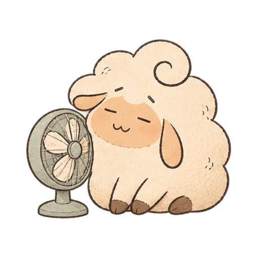

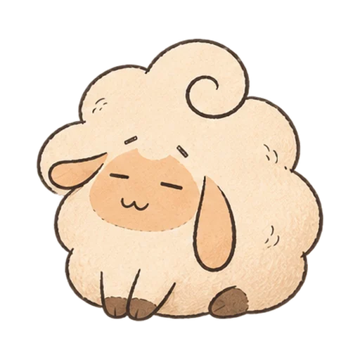

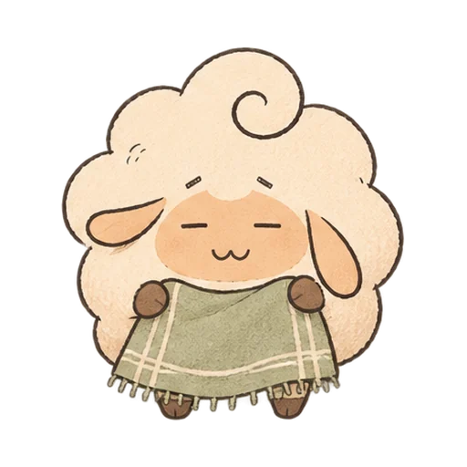

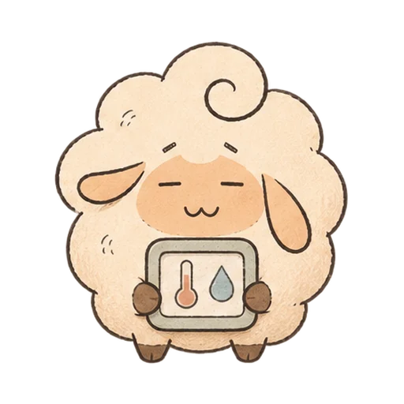

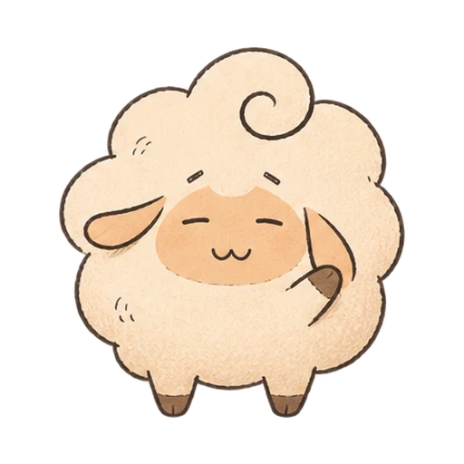

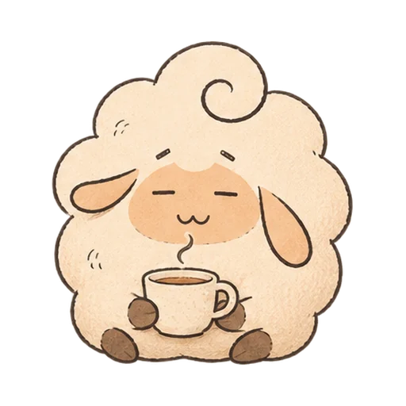


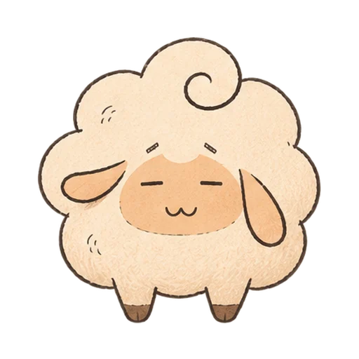
奶油色云朵羊毛，头顶一小撮卷毛，腿短短的。常坐在窗边，抱着毯子或捧着一杯热饮。
英文备选名：Curlet、Woolrin、Flumlet、Frilkin。







茶色圆脸，头顶顶着一片小叶子。在家里或站或坐，动作慢悠悠的。
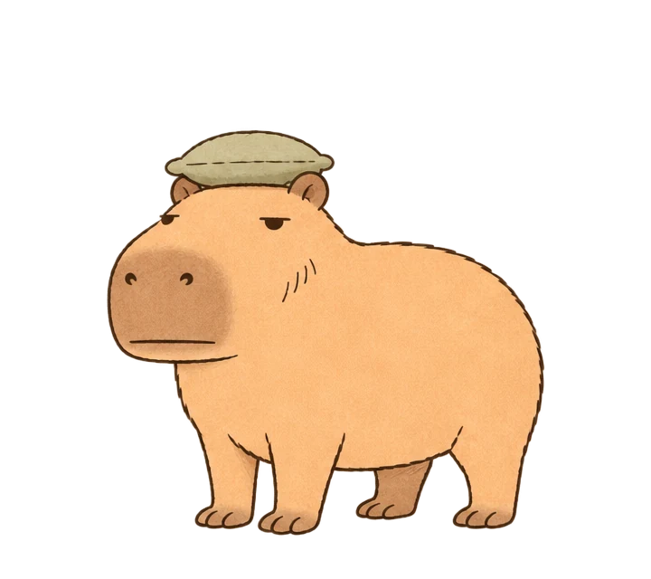
灰褐色的毛，胸口一片暖白，尾巴弯成一个钩。多半出现在沙发上和窗台边。
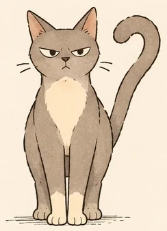
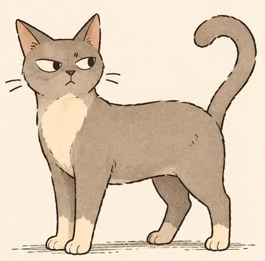
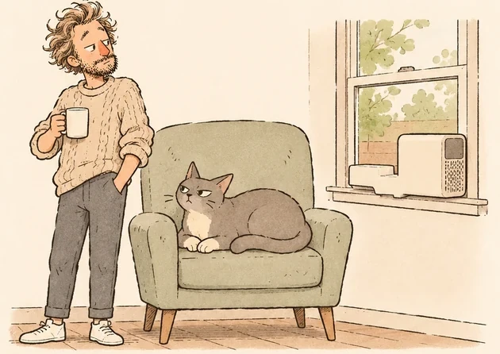